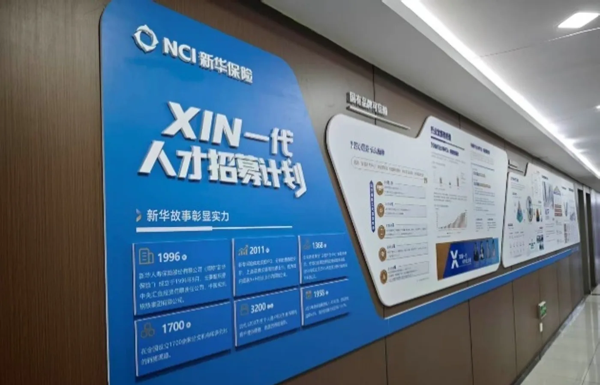
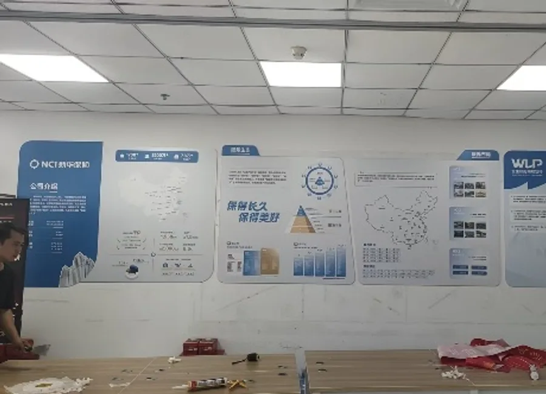
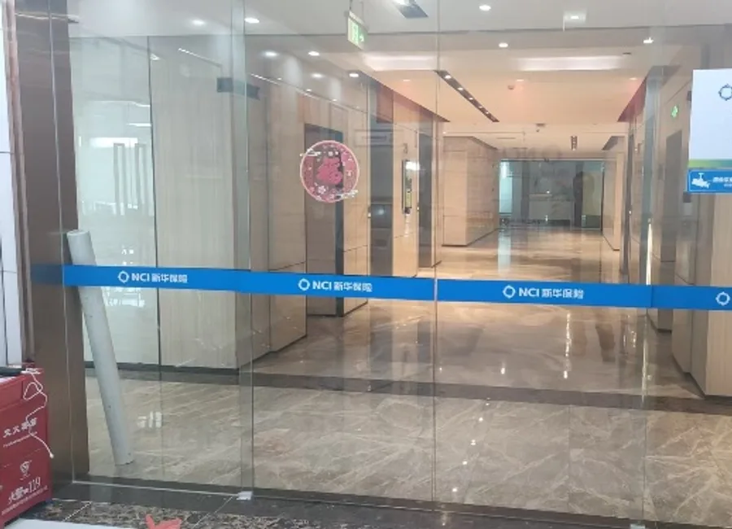

先走进一线，再决定品牌空间应该怎样更新。
通过现场走访与深度访谈识别真实需求，把总部视觉规范转译为不同机构可执行的环境与物料方案。
- 走访机构并记录空间、物料痛点
- 开展一小时以上深度访谈
- 协调设计、制作与点位更新
我的角色 一线调研 · 需求梳理 · 品牌空间更新 · 落地协同
七家机构 / 十二点位
通过现场走访与深度访谈识别真实需求，把总部视觉规范转译为不同机构可执行的环境与物料方案。


完成 5 场一小时以上深度访谈，把分散反馈沉淀为可行动建议，并推动 12 处基层品牌点位落地更新。